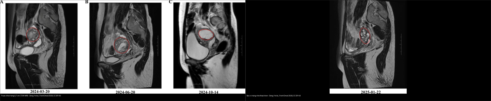
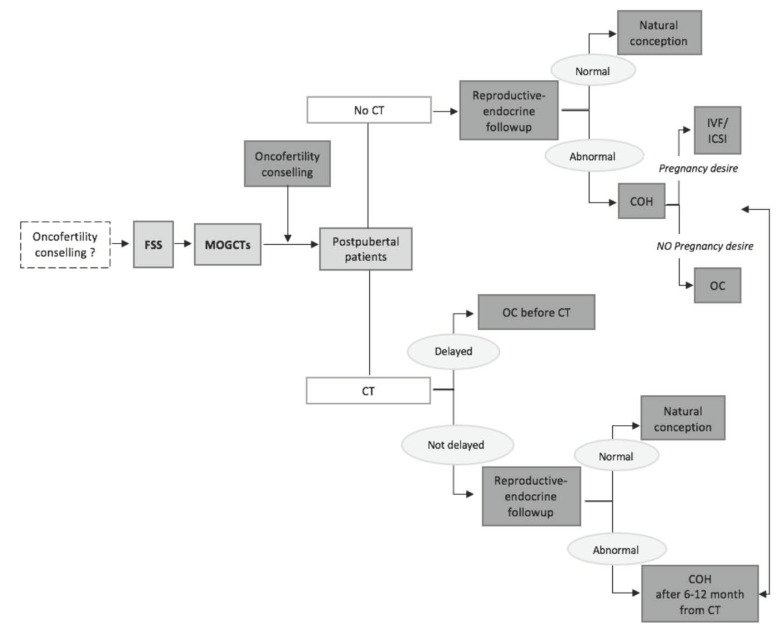
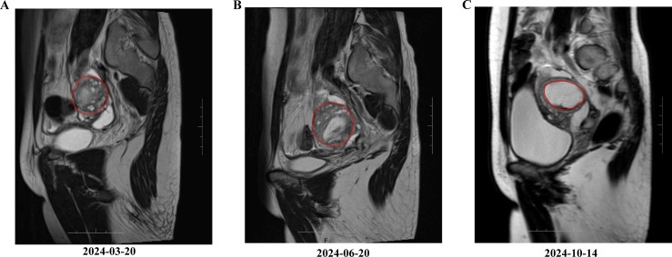
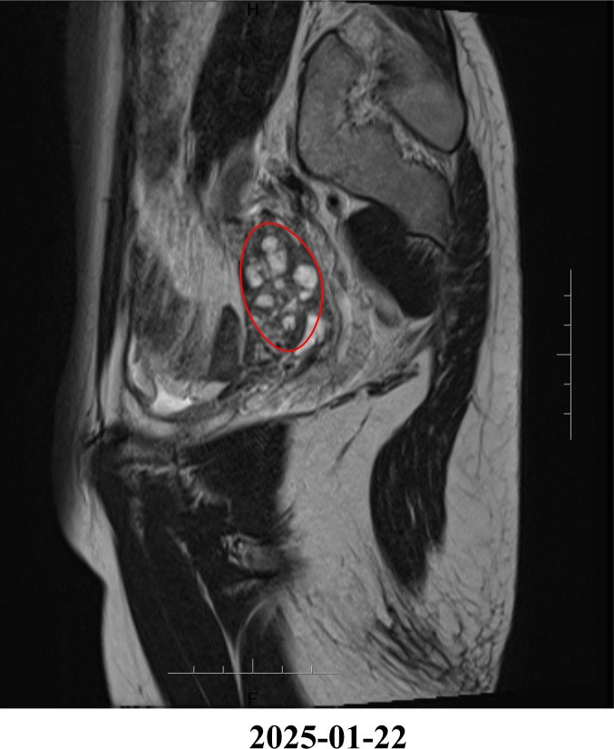
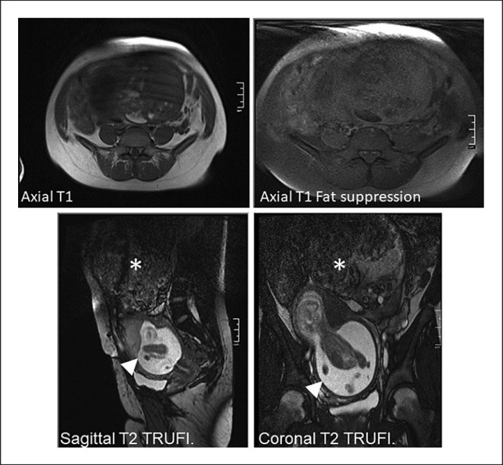
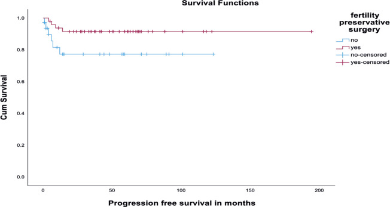
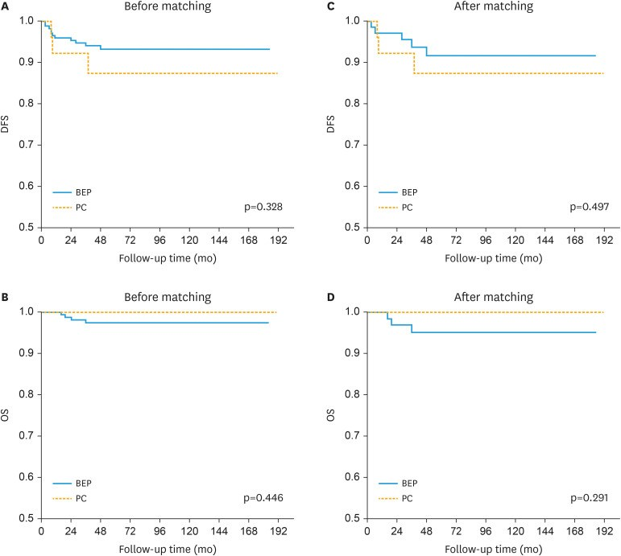

533 — Theo dõi dài hạn & bảo tồn sinh sản sau u tế bào mầm buồng trứng / Long-term surveillance & fertility preservation after malignant ovarian germ cell tumours
Tags: pattern:u-buong-trung pattern:u-mam pattern:gieo-rac-phuc-mac vung:buong-trung vung:phuc-mac score:FIGO protocol:CT-bung-chau protocol:MRI-chau protocol:AFP-bHCG-LDH protocol:bao-ton-sinh-san
Mức chắc chắn (certainty): tổng hợp y văn (literature synthesis) — nhóm tự biên từ y văn mở (Europe PMC/PMC: Biomedicines, Ecancermedicalscience, J Gynecol Oncol, Case Rep Oncol, World J Clin Oncol, BMC Womens Health) + các ca minh họa có giấy phép; không phải ca nguyên văn đơn lẻ.
1. Tổng quan — "tái phát gần như luôn < 2 năm": cửa sổ theo dõi + giá trị của bảo tồn sinh sản
- Bối cảnh: u tế bào mầm buồng trứng ác tính (malignant ovarian germ cell tumour — MOGCT) hiếm, nhưng chiếm ~70% u buồng trứng ác ở tuổi vị thành niên → phần lớn bệnh nhân còn mong muốn sinh sản. Đây là lý do bảo tồn sinh sản (fertility-sparing surgery — FSS) là lựa chọn mặc định.
- Tiên lượng (định lượng): sống 5 năm > 90%; sống toàn bộ (OS) 10 năm ~91%, sống không tiến triển (PFS) 10 năm ~82,4%. Nhờ tiên lượng tốt, trọng tâm chăm sóc chuyển sang theo dõi tái phát và chất lượng sống sinh sản.
- Vì sao theo dõi phải "dày" ở 2 năm đầu: 96% tái phát xảy ra trong vòng 24 tháng (Dey et al., n = 170; tái phát chung 15%); Mangili (n = 123, 65,9% FSS) tái phát 17,8%, hơn nửa trong 24 tháng. Đây là cơ sở để đặt lịch chụp 3–6 tháng/lần trong 2 năm đầu rồi giãn ra.
- TẠI SAO phẫu thuật phân giai đoạn (staging) đầy đủ lại quyết định nguy cơ tái phát: ở giai đoạn I, phẫu thuật không đủ phân giai đoạn → tái phát 26% so với 8,6% khi phân giai đoạn trọn (MITO) — vì tổn thương vi thể ngoài buồng trứng bị bỏ sót. Với MOGCT, "bảo tồn" vẫn phải lấy đủ mẫu/đánh giá ổ bụng.
- Dấu ấn huyết thanh là trục theo dõi (bán hủy): AFP ~5–7 ngày, β-hCG ~24–36 giờ, LDH ~2–3 ngày. Quy tắc: dấu ấn phải giảm theo đúng chu kỳ bán hủy sau mổ/hóa trị; chững lại hoặc tăng lại = nghi tái phát/u non còn sót (đối chiếu
538— GTS là ngoại lệ: khối to mà dấu ấn bình thường). - TẠI SAO ảnh theo dõi dễ "dương tính giả": sau mổ/hóa trị, buồng trứng và phúc mạc có thay đổi hậu phẫu – nội tiết – viêm, tạo khối/nang giả tái phát. Ca điển hình: nang lạc nội mạc (endometriotic cyst) xuất hiện sau điều trị u quái non → MRI cho hình nang giả u, nhưng không phải tái phát (theo dõi thoái triển). Vì vậy phải so phim nền + dấu ấn + mô học trước khi kết luận.
- Bảo tồn sinh sản — FSS an toàn ngay cả giai đoạn muộn: FSS kèm hóa trị đúng cho sống còn tương đương mở rộng (Raji: 5 năm DFS 88,1%/OS 96,4%; SD đặc hiệu). Phẫu thuật đúng = cắt phần phụ một bên ± cắt nang tinh thể bên đối diện + sinh thiết/phân giai đoạn, giữ tử cung và buồng trứng đối diện.
- TẠI SAO buồng trứng CÓ THỂ phục hồi dù đã hóa trị: u tế bào mầm dùng BEP (bleomycin/etoposide/cisplatin) — nhóm ít độc tuyến sinh dục hơn alkyl hóa; đa số bệnh nhân có kinh lại < 1 năm (Raji: tất cả có kinh lại trong 1 năm; Dey: 87% – 117/134 có kinh lại). Tỉ lệ có thai sau FSS: 95% (Low 2000), 80% (Mangili), 76,5% thụ thai tự nhiên (Raji, 13/17), 73% (Zamani, 19/26). Tuy vậy một số vẫn suy buồng trứng sớm (POI) → dự trữ buồng trứng (AMH) cần được tư vấn và theo dõi.
- Khác biệt BEP vs paclitaxel/carboplatin (PC): không khác biệt DFS (p = 0,328) và OS (p = 0,446); PC an toàn tương đương về kết cục sinh sản (Chu et al., n = 213) → lựa chọn PC khi muốn giảm độc tính (ví dụ có bệnh nền phổi/thần kinh).
- Vì sao quan trọng: buông theo dõi sớm → bỏ lỡ tái phát (tử vong được nhắc nhiều ở u xoang nội bì); theo dõi quá mức/quyết định oan → mổ/hóa trị lại vô ích ở người trẻ còn sinh sản.
2. Mẫu hình trên ảnh theo dõi + chẩn đoán phân biệt (Gamut)
- Khuôn 1 — Nang/khối ở phần phụ MỚI sau điều trị, không triệu chứng, dấu ấn bình thường: đa số là lành/thay đổi sinh lý (nang xuất huyết, nang lạc nội mạc, nang corpus luteum, thay đổi xoắn cuộn sau mổ). Theo dõi + đối chiếu; không mổ ngay.
- Khuôn 2 — Nốt/dep phúc mạc mới: phân biệt tái phát thật (mô non, ngấm mạnh, dấu ấn tăng) với gliomatosis peritonei (mô glial trưởng thành, grade 0, lành —
538) và LPD lành sau morcellation (518). - Khuôn 3 — Di căn xa: phổi/trung thất, gan, não, xương — thường kèm dấu ấn tăng; CT ngực bắt buộc trong lịch theo dõi.
- Khuôn 4 — Tái phát thể u xoang nội bì (yolk sac): báng + bệnh phúc mạc là kiểu tái phát đặc trưng, khó cứu vãn (Dey) → theo dõi AFP sát.
- Khuôn 5 — "Khối tăng lên" mà dấu ấn bình thường: nghĩ GTS/GP (
538) hoặc khối lành — không mặc định tái phát. - Khuôn 6 — Bệnh nhân đang/đã mang thai: thay đổi thai kỳ (tử cung to, buồng trứng đẩy cao) → đọc MRI có thai, không nhầm tổn thương sinh lý với tái phát (FSS vẫn cho phép có thai).
- Gamut theo dấu ấn (bộ lọc đầu tiên): dấu ấn bình thường → nghiêng lành/GTS-GP; dấu ấn tăng → tái phát thật → hóa trị ± mổ.
- Mimic cần loại: nang lạc nội mạc giả tái phát (ảnh ca 2–3), nang xuất huyết, u xơ tử cung, dính/vết mổ, di căn ác thật.
3. Bảng so sánh phân biệt (ma trận đối chiếu)
| Thực thể (entity) | Hình ảnh điển hình (US/CT/MRI) | Chốt vào (rule-in) | Chốt loại (rule-out) | Gợi ý xác nhận |
|---|---|---|---|---|
| Tái phát MOGCT thật | Nốt/khối đặc ngấm mạnh ở chậu–phúc mạc/gan/phổi, có thể báng | Dấu ấn AFP/β-hCG TĂNG trở lại + tổn thương ngấm mạnh mới | Dấu ấn bình thường + tổn thương mỡ/nang → GTS/GP | Mô bệnh/mô học + dấu ấn theo mốc; CT ngực–bụng–chậu |
| Nang lạc nội mạc giả tái phát | Nang, T1 sáng + T2 shading, có thể nhiều vi nang sau điều trị | T1 sáng + shading + dấu ấn BÌNH THƯỜNG + dao động theo chu kỳ/thuốc | Đặc ngấm mạnh + dấu ấn tăng → tái phát | MRI T1 fat-sat (máu cũ không mất tín hiệu); theo dõi thoái triển |
Gliomatosis peritonei (538) |
Dep/nốt nhỏ mạc nối–mạc treo, xơ mỡ; hiếm khi thành khối | Mô glial trưởng thành (grade 0) + dấu ấn bình thường | Thành phần non trên mô học → u non | Mô bệnh (mature glia); theo dõi |
U quái "mọc" GTS (538) |
Khối mỡ ± vôi to lên sau hóa trị | Khối giàu mỡ to lên + dấu ấn BÌNH THƯỜNG | Dấu ấn tăng → tái phát thật | Mô học mature teratoma; MỔ, không hóa trị |
| Thay đổi sau mổ/tia xạ | Buồng trứng xoắn cuộn, giả đặc, dính; giảm tín hiệu xơ | Ổn định so phim cũ + dấu ấn bình thường | Tổn thương mới/tăng dần + ngấm → nghi tái phát | So phim nền; mô học khi cần |
| U xơ tử cung lành | Khối cơ–xơ ở tử cung, T2 tối, ít ngấm | Bờ rõ + tín hiệu xơ + không dấu ấn | Vị trí phần phụ + ngấm mạnh → tổn thương khác | US/MRI; theo dõi |

Trái: khối nang 5,7 cm ở phần phụ trái (T2W, các mốc 3–10/2024) — sau điều trị KHÔNG phải tái phát. Phải: MRI 1/2025 — vi nang nhỏ thoái triển khi theo dõi. Nguồn: Dong Y et al., Front Oncol 2026, Fig. 1–2, CC BY 4.0 (ảnh ghép letterbox).Ba dấu hiệu "chốt" khi đọc ảnh theo dõi
- So phim nền: tổn thương ổn định/thoái triển = gần như lành; mới/tăng dần + tổn thương khác mới = nghi tái phát.
- Đối chiếu dấu ấn cùng ngày chụp: chẩn đoán tái phát phải dựa trên AFP/β-hCG/LDH, không chỉ ảnh.
- Tín hiệu mỡ/máu: mỡ (T1 sáng mất khi fat-sat) và máu cũ (T1 sáng không mất) định hướng u quái trưởng thành/nang nội mạc, khác mô non.
4. Protocol theo dõi + bảo tồn sinh sản + flowchart
- Phẫu thuật (FSS): cắt phần phụ một bên (unilateral salpingo-oophorectomy) ± cắt nang bên đối diện nếu tổn thương hai bên; giữ tử cung và buồng trứng đối diện; lấy đủ mẫu/phân giai đoạn (mạc nối, phúc mạc, hạch khi cần); tránh morcellation cắt vụn (nguy cơ gieo rắc —
518). - Hóa trị bổ trợ: BEP (bleomycin/etoposide/cisplatin) là chuẩn mực; giai đoạn IA độ 1 (−YST) có thể theo dõi đơn thuần. PC là lựa chọn thay thế khi muốn giảm độc tính, không khác DFS/OS.
- Lịch theo dõi tái phát:
- CT ngực + CT/MRI bụng–chậu mỗi 3–6 tháng trong 2 năm đầu, sau đó 6–12 tháng/lần (nhiều nơi theo mốc 6 tháng trong 2 năm đầu).
- Dấu ấn AFP/β-hCG/LDH mỗi lần khám: theo đường cong bán hủy; tăng lại = tái phát.
- Sau 2–5 năm: khám lâm sàng + dấu ấn định kỳ, giảm dần chụp; tái phát muộn tuy hiếm nhưng có.
- Bảo tồn sinh sản (fertility preservation): tư vấn trước hóa trị nếu có thể — trữ noãn/trữ phôi (cần trưởng thành sinh sản), trữ mô buồng trứng (OTC) khi chưa dậy thì, dịch chuyển buồng trứng (oophoropexy) khi cần xạ. Sau FSS: theo dõi dự trữ buồng trứng (AMH, FSH), hỗ trợ sinh sản khi cần; hầu hết có kinh lại < 1 năm.
- Kết cục sinh sản (định lượng): thụ thai sau FSS 73–95% tùy nghiên cứu; nếu có hóa trị 80%, FSS đơn thuần 100% (nghiên cứu nhỏ); BEP ít độc sinh sản hơn alkyl hóa.
- Chỉ định mổ khi theo dõi: tổn thương mới/tăng dần, dấu ấn tăng, hoặc biến chứng (tắc ruột, khối to). Không mổ chỉ vì "có nang mới" khi dấu ấn bình thường và ổn định.
flowchart TD
A[Sau dieu tri MOGCT: FSS +/- hoa tri] --> B[Lich: dau an + CT nguc/bung-chau 3-6 thang trong 2 nam dau]
B --> C{Ton thuong MOI hoac TO LEN?}
C -->|Khong, on dinh/thoai trien| D[Theo doi tiep, gian lich 6-12 thang]
C -->|Co| E{AFP / beta-hCG / LDH?}
E -->|TANG tro lai| F[Tai phat THAT: hoa tri cuu van +/- mo]
E -->|BINH THUONG| G{Nhin tu the chi tiet: MO / MAU / NANG?}
G -->|T1 sang + mat fat-sat = MO / vôi + khoi to len| H[GTS-GP: theo 538, MO khong hoa tri]
G -->|T1 sang khong mat fat-sat + T2 shading| I[Nang lac noi mac gia tai phat: theo doi, MRI dinh ky]
G -->|Xoan cuon, giam tin hieu sau mo| J[Thay doi hau phau: theo doi]
F --> K[Danh gia lai du tru buong trung - tu van sinh san]
D --> L{Khong con nhu cau sinh san + het theo doi?}
L -->|Chua| B
L -->|Roi| M[Gian theo doi dai han: dau an dinh ky, kham lam sang]
5. Biến thể bình thường và cạm bẫy
- Cạm bẫy "nang mới = tái phát": ca Dong et al. — nang lạc nội mạc sau điều trị u quái non trông như khối tái phát (5,7 cm) nhưng thoái triển khi theo dõi; dấu ấn bình thường. Đừng mổ/hóa trị vội.
- Cạm bẫy dấu ấn "dương giả": thai kỳ, dùng cần sa, bệnh gan, hạch lành có thể làm β-hCG/AFP tăng nhẹ — luôn diễn giải cùng bối cảnh + chuỗi theo thời gian.
- Cạm bẫy "ổn định thì bỏ theo dõi": 96% tái phát trong 24 tháng → không xuống thang quá sớm; nhưng cũng không chụp vô hạn (nguy cơ bức xạ ở người trẻ) — dùng MRI khi có thể.
- Cạm bẫy gieo rắc khi mổ: morcellation cắt vụn u có thể gieo rắc phúc mạc/lành (
518); nên lấy trọn khối. - Cạm bẫy bỏ sót phân giai đoạn: FSS "không trọn" làm tái phát giai đoạn I lên 26% (so với 8,6% khi đủ) — vẫn phải lấy mẫu phúc mạc/mạc nối/hạch.
- Cạm bẫy tư vấn sinh sản: hứa hẹn "chắc chắn có con" là sai — một phần vẫn POI/suy buồng trứng; cần tư vấn trữ noãn/mô trước hóa trị và theo dõi AMH, đặt kỳ vọng đúng.
- Cạm bẫy thai kỳ: đọc MRI ở bệnh nhân mang thai — tử cung to đẩy phần phụ; đừng nhầm thay đổi thai kỳ với tái phát (FSS vẫn cho phép có thai: ca Al-Hazaimeh, ảnh ca 4).
6. Tự lượng giá — Blind Quiz
Ca 1 — Sơ đồ chiến lược bảo tồn sinh sản. Đọc sơ đồ.

- Gợi ý lâm sàng (clinical context): bệnh nhân MOGCT trẻ, đang cân nhắc hóa trị.
- Câu hỏi: Hai nhánh chính của sơ đồ là gì? Khi nào "hoãn hóa trị để trữ sinh sản" và khi nào "trữ buồng trứng ngay"?
Bấm để hiện đáp án (findings + chẩn đoán)
- Dấu hiệu (findings): sơ đồ phân nhánh theo bệnh nhân sau dậy thì:
- Không cần hóa trị (No CT): theo dõi nội tiết sinh sản → bình thường → thụ thai tự nhiên; bất thường + muốn có con → COH + IVF/ICSI; không muốn có con → trữ noãn (OC).
- Cần hóa trị (CT): nếu hoãn được → trữ noãn trước CT; nếu không hoãn được → theo dõi nội tiết, bình thường → thụ thai tự nhiên, bất thường → COH sau 6–12 tháng kể từ CT.
- Chẩn đoán (diagnosis): nguyên tắc bảo tồn sinh sản — ưu tiên trữ noãn/phôi trước hóa trị khi còn thời gian; khi bắt buộc hóa trị ngay thì theo dõi và kích thích trứng sau 6–12 tháng.
- Nguồn ảnh: Vasta FM et al., Biomedicines 2020, Fig. 1, CC BY 4.0.
Ca 2 — Nữ trẻ sau điều trị u quái non, MRI thấy khối 5,7 cm ở phần phụ trái. Đọc MRI.

- Hỏi: dấu hiệu chính? Đây có phải tái phát không? Bước tiếp theo?
Bấm để hiện đáp án (findings + chẩn đoán)
- Dấu hiệu (findings): khối 5,7 × 4,5 × 3,8 cm nhiều nang ở phần phụ trái (T2W) theo dõi qua các mốc 3/2024 → 6/2024 → 10/2024.
- Chẩn đoán (diagnosis): khối giả tái phát do nang lạc nội mạc (endometriotic cyst) sau điều trị u quái non — KHÔNG phải tái phát; xử trí theo dõi + đối chiếu dấu ấn, không mổ/hóa trị ngay.
- Nguồn ảnh: Dong Y et al., Front Oncol 2026, Fig. 1, CC BY 4.0.
Ca 3 — MRI theo dõi 1/2025 cùng bệnh nhân. Đọc MRI.

- Hỏi: khối thay đổi thế nào so với ca 2? Điều này ủng hộ chẩn đoán gì?
Bấm để hiện đáp án (findings + chẩn đoán)
- Dấu hiệu (findings): nhiều vi nang nhỏ ở phần phụ trái (không còn khối lớn đặc/xâm lấn) — thoái triển so với ca 2.
- Chẩn đoán (diagnosis): ủng hộ nang lành (nang lạc nội mạc) chứ không phải tái phát — bài học: so phim nền theo thời gian là bắt buộc; tổn thương thoái triển/ổn định gần như lành.
- Nguồn ảnh: Dong Y et al., Front Oncol 2026, Fig. 2, CC BY 4.0.
Ca 4 — Bệnh nhân đang mang thai, MRI bụng–chậu. Đọc MRI.

- Hỏi: hai cấu trúc dấu * và arrowhead là gì? Tại sao FSS vẫn cho phép có thai?
Bấm để hiện đáp án (findings + chẩn đoán)
- Dấu hiệu (findings): (A) T1: khối lớn hỗn hợp tín hiệu — u quái non buồng trứng (dấu *); (B) T1 fat-sat: thành phần mỡ; (C, D) T2 TRUFI: u quái non (dấu *) cạnh tử cung mang thai (arrowhead).
- Chẩn đoán (diagnosis): u quái non buồng trứng ở bệnh nhân mang thai — FSS ± hóa trị vẫn cho phép giữ thai và sinh sản sau đó (nguyên tắc bảo tồn sinh sản); cần hội chẩn sản–ung thư.
- Nguồn ảnh: Al-Hazaimeh M et al., Case Rep Oncol 2021, Fig. 1, CC BY-NC 4.0 (giữ nguyên bản).
Ca 5 — Đường cong sống còn theo loại phẫu thuật. Đọc biểu đồ.

- Hỏi: đường "yes" (FSS) và "no" khác nhau ra sao? Điều này nói gì về an toàn của FSS?
Bấm để hiện đáp án (findings + chẩn đoán)
- Dấu hiệu (findings): đường FSS ("yes", hồng) ổn định ở mức cao (
0,9) trong khi đường không FSS ("no", xanh) thấp hơn (0,78) trên trục PFS theo tháng. - Chẩn đoán (diagnosis): FSS không làm xấu sống còn không tiến triển — trong nghiên cứu này nhóm FSS còn tốt hơn; kết luận: bảo tồn sinh sản an toàn, kể cả giai đoạn tiến xa (5 năm DFS 88,1%/OS 96,4% của toàn nhóm).
- Nguồn ảnh: Raji PS et al., Ecancermedicalscience 2025, Fig. 3, CC BY 4.0.
Ca 6 — Biểu đồ so sánh BEP vs paclitaxel/carboplatin. Đọc biểu đồ.

- Hỏi: BEP và PC khác nhau về DFS/OS không (p)? Ảnh hưởng tới lựa chọn phác đồ ở người muốn sinh sản?
Bấm để hiện đáp án (findings + chẩn đoán)
- Dấu hiệu (findings): (A, C) DFS trước/sau ghép điểm xu hướng: p = 0,328 / 0,497; (B, D) OS: p = 0,446 / 0,291 — không khác biệt.
- Chẩn đoán (diagnosis): PC an toàn tương đương BEP về DFS/OS và kết cục sinh sản (n = 213, 86,9% BEP vs 13,1% PC) → có thể chọn PC để giảm độc tính (phổi/thần kinh) ở người muốn sinh sản, không chỉ BEP.
- Nguồn ảnh: Chu R et al., J Gynecol Oncol 2023, Fig. 2, CC BY-NC 4.0 (giữ nguyên bản).
Ca 7 — Ảnh ghép: khối "giả tái phát" và theo dõi. Nhìn ghép.
- Hỏi: bên trái và bên phải khác nhau thế nào? Đâu là bằng chứng đây KHÔNG phải tái phát?
Bấm để hiện đáp án (findings + chẩn đoán)
- Trái: khối nang 5,7 cm phần phụ trái (T2W, 3–10/2024) — trông như khối tái phát.
- Phải: MRI 1/2025 — vi nang nhỏ thoái triển → KHÔNG phải tái phát.
- Chốt: bằng chứng "không tái phát" đến từ so phim theo thời gian (thoái triển/ổn định) + dấu ấn bình thường, không phải từ một phim đơn độc.
- Nguồn: Dong Y et al., Front Oncol 2026, Fig. 1–2, CC BY 4.0 (ảnh ghép letterbox).
Bài liên quan chéo
- 500 – Tổng quan Vú & Sản phụ khoa
- 530 – Khối phần phụ O-RADS, dermoid & xoắn
- 535 – Ung thư buồng trứng, phúc mạc & u Krukenberg
- 536 – U mầm & u mô đệm–dây sinh dục buồng trứng
- 537 – U buồng trứng giáp biên (borderline)
- 538 – Hội chứng u quái "mọc" & gliomatosis peritonei
Ảnh
533_bao-ton-sinh-san-flowchart_PMC7761340.jpg,533_nang-gia-tai-phat-MRI_PMC13287004.jpg,533_theo-doi-MRI_PMC13287004.jpg,533_song-con-FSS_PMC12812814.jpg,533_thai-ky-MRI_PMC8787521.jpg,533_BEP-vs-PC_PMC9995871.jpg,composite_nang-gia-tai-phat-vs-theo-doi.jpg. Nguồn + giấy phép từng ảnh trongimages/CREDITS.md.
Không dùng để chẩn đoán độc lập khi chưa có người hướng dẫn.